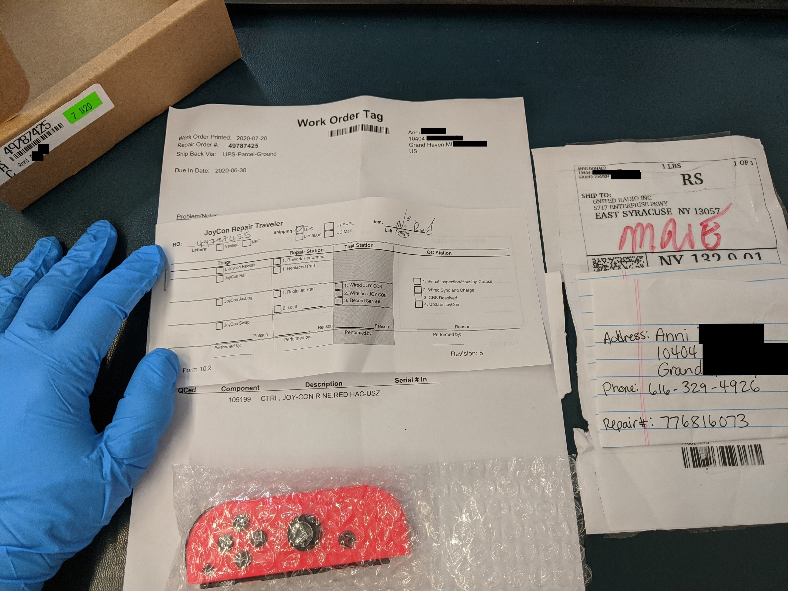
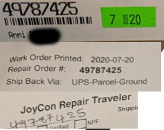
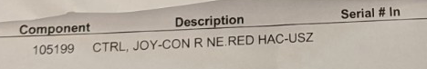
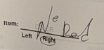
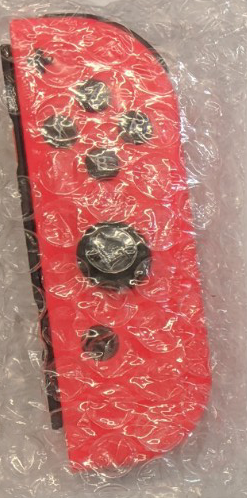
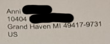
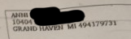
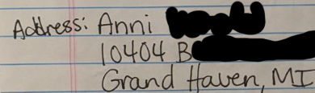

▹ All operators must be wearing gloves.
▹ All benches must have scratch protection in the form of either pink foam or the ESD mat.
▹ All operators must follow one piece flow, meaning there is only one repair order on the bench at a time.
There are no exceptions to these rules. If there is a preventative, inform a lead or supervisor immediately.
Step 1: Validate All Information

The operator should validate all information.
▹ Each RO on the box label should correspond to a work order in the box.
If any do not match completely, are
missing, or have duplicates, this is a failure and must be processed as a discrepancy.

▹ All Joycons in the box must correspond to the items received on the work order tag and written on the traveler.
If there is more than one joycon, each joycon must have a corresponding work order.



▹ All paperwork in the box must belong to the same consumer at the same address.
If there is any address mismatch, this must be processed as a discrepancy.


